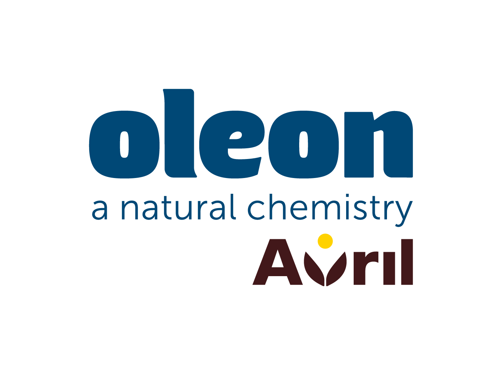
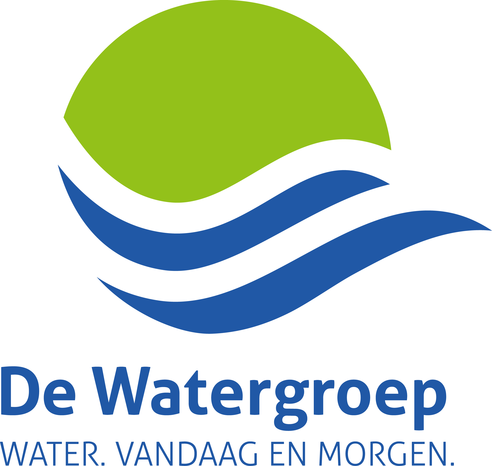

Cédric
Van Laethem
Van Laethem
Data Engineer · Senior Consultant
Belgium
vanlaethemcedric@gmail.com
+32 477 81 12 01
linkedin.com/in/cédric-van-laethem
vanlaethemcedric@gmail.com
+32 477 81 12 01
linkedin.com/in/cédric-van-laethem
Profile
Data Engineer and Senior Consultant with hands-on experience in modern data engineering, data integration and analytics, combining technical expertise with almost six years of consulting experience. Experienced in Databricks, SQL, Python/PySpark and Microsoft Fabric integrations, with a focus on data pipelines, data transformation, validation and reliable analytical datasets. Skilled in troubleshooting complex data issues, improving data quality and translating business requirements into maintainable technical solutions. Brings a strong analytical mindset, structured problem-solving approach and proven ability to collaborate with technical teams and business stakeholders to deliver data-driven solutions.
Professional Experience
Data Engineer Consultant
delaware
2025 – Present
- Develop and maintain data ingestion and transformation workflows in a Databricks platform (Delta Lake, Unity Catalog) using SQL and Python/PySpark, delivering reliable, well-structured datasets for Power BI reporting across finance and asset management.
- Process and transform data from Microsoft Dynamics 365 and other enterprise sources, using Microsoft Fabric and FabricLink integrations to build reusable data access patterns.
- Validate and troubleshoot data across pipelines, SQL transformations and datasets, resolving schema mismatches, data type inconsistencies and transformation errors to improve data reliability.
- Collaborate with data engineers, technical specialists and business stakeholders to translate requirements into practical solutions and document data flows and transformation logic.
Enterprise Information Management Consultant
delaware
2021 – 2025
- Delivered application management for OpenText Content Server and Extended ECM for SAP, coordinating day-to-day support for key customers, prioritising incidents and service requests, and troubleshooting complex application and integration issues across OpenText and SAP.
- Played a leading role in OpenText Content Server upgrades, coordinating technical investigations, configuration, blueprinting, testing and stakeholder communication through to go-live.
- Supported the SAP ECC-to-S/4HANA migration by analysing OpenText integration requirements, contributing to solution blueprints and participating in workshops.
- Prepared and maintained technical documentation, test scenarios and user guidance, and supported user acceptance testing and end-user training.
Companies I've worked for

